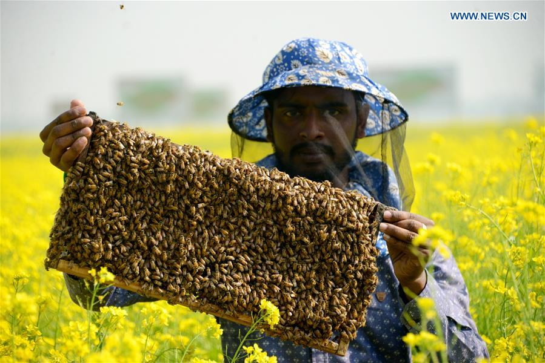
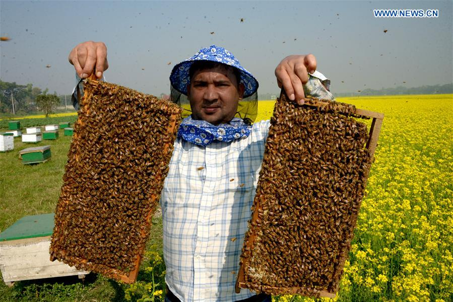
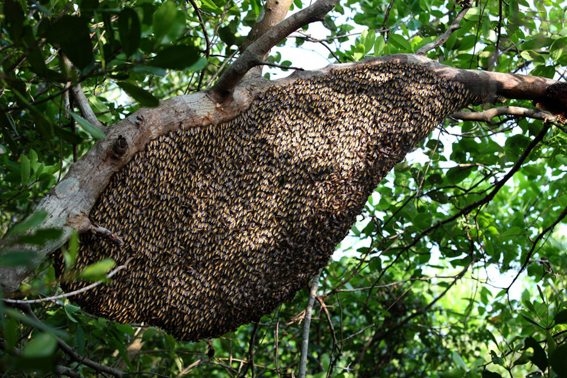
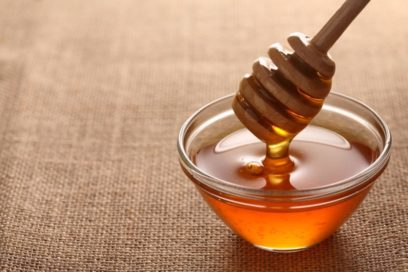

Honey production in Bangladesh is a significant agricultural activity, with a rich tradition and a diverse range of honey varieties. Honey is collected from different floral sources across the country, resulting in distinct flavors and characteristics.
Bangladesh is home to a wide variety of flowering plants, and bees have the opportunity to collect nectar from diverse sources, including mango, mustard, lychee, jujube, sunflower, and many other plants. This floral diversity contributes to the unique flavors and aromas found in Bangladeshi honey.
The traditional method of honey collection in Bangladesh involves the use of beehives made from natural materials such as bamboo or wood. Beekeepers carefully manage the hives and ensure the health and well-being of the bees. They harvest honey by gently removing the honeycombs from the hives, taking care not to harm the bees or their habitat.
Bangladesh produces both raw and processed honey. Raw honey is extracted directly from the combs and typically undergoes minimal filtration, preserving its natural properties and retaining small traces of pollen, propolis, and beeswax. Processed honey, on the other hand, undergoes filtration and may be heated to remove impurities and achieve a smoother consistency.
The taste and color of honey in Bangladesh can vary depending on the floral sources and the region where it is produced. Some honey varieties have a light and mild flavor, while others have a more robust and distinctive taste. The color can range from pale golden to dark amber, depending on the nectar collected by the bees.
Honey is not only enjoyed as a sweetener but also valued for its potential health benefits. It is believed to possess antibacterial, antioxidant, and soothing properties. In Bangladesh, honey is often used in traditional medicine and home remedies for various ailments.
In recent years, there has been a growing emphasis on modernizing and commercializing honey production in Bangladesh. Efforts are being made to improve beekeeping techniques, enhance honey quality, and establish quality standards. This has led to the emergence of branded honey products and increased market awareness of the diverse honey offerings from different regions of the country.
When purchasing honey in Bangladesh, it is advisable to look for trusted sources that ensure quality and authenticity. Local markets, supermarkets, and specialty stores often carry a range of honey products, both from small-scale producers and larger brands.
In conclusion, honey production in Bangladesh is a vibrant industry, offering a variety of flavors and types of honey. The rich floral diversity of the country contributes to the unique taste profiles found in Bangladeshi honey. Whether used as a natural sweetener or for its potential health benefits, honey holds a special place in the culinary and traditional practices of Bangladesh.